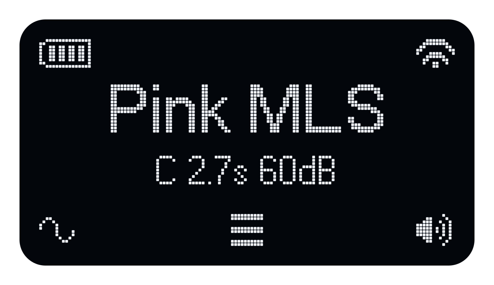

Echo
The Echo is a portable acoustic speech source intended for speech intelligibility measurements. It is the successor to the B&K 4720 Speech Source (Echo). The most important changes from the earlier model are an improved loudspeaker supporting a wider range of signals, a calibrated STIPA signal, advanced functionality supported by a user-friendly menu system, and WiFi based remote control using DiracMobile.
The Echo is designed to be used with the DiracMobile or Dirac acoustics measurement software.
On this page
Speech intelligibility measurements
Speech intelligibility describes how clearly speech can be understood at a listening position. Reverberation, echoes and background noise can make speech less clear. The Speech Transmission Index (STI) provides an objective measure on a scale from 0 to 1; STIPA is a simplified method developed for public address systems. EN IEC 60268-16 describes the STI model and measurement methods.
STI is based on how well variations in the intensity of speech are preserved between the talker and listener. There are two ways to determine this:
- Direct method: Echo plays the modulated noise STIPA signal. The measurement software analyses the signal received at the listening position to determine how much of its modulation has been preserved.
- Indirect method: Echo plays Pink MLS or ESweep to measure an impulse response. The measurement software derives the modulation transfer from that response and calculates STI or STIPA. Background noise and speech levels must also be accounted for when assessing intelligibility under the intended conditions. This method assumes a linear, time-invariant transmission path.
Echo provides the test signals; DiracMobile or Dirac records and analyses the response. For a closer comparison of the two approaches, see STIPA: A comparison between direct and indirect measuring methods.
Main functions
- Calibrated signal playback (PMLS, ESweep, STIPA, Speech)
- User signal playback
- BNC line input and output support
- Wi‑Fi based remote control using DiracMobile
Control panel

| Number | Function |
|---|---|
| 1 | OLED Display |
| 2 | Left button - Signal setup |
| 3 | Middle button - Menu |
| 4 | Right button - Start/stop playback |
| 5 | BNC line level input |
| 6 | BNC line level output |
| 7 | USB-C power input |
Display

The home page shows the battery state (upper left), Wifi state (upper right), selected signal (center), and icons for the three buttons.
In this example, the selected signal is a continuous (C) Pink MLS signal with a length of 2.7 seconds (2^15 samples) at 60 dBA.